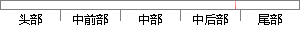

Request合法域名 https://qcloud.
片段位置图

相似结果|
1
原句片段：Request合法域名 https://qcloud.
相似片段 1：PKCS#10 Certification Request: .p10 .csrPKCS#7 ...云,选择SSL证书管理(https://console.qcloud.com/...【微信小程序】合法域名校验出错,不在以下合法域名...
相似片段 2：(小程序密码),所以需要先到https://mp.weixin.qq.com/cgi-bin/wx页面去注册...·request合法域名 xxx.qcloud.la ·socket合法域名 xxx.ws.qcloud.la ·upload...
相似片段 3："tunnelServerUrl": "https://ABCD.com", 2.更新微信小程序服务器配置 前往...request合法域名XXX.AAABBB.com socket合法域名XXX.ws.qcloud.la uploadFile合法域名...
相似片段 4：扫码完成身份校验后,request 合法域名和 socket 合法域名均填写在上一步准备好的...sudo apt-get update sudo wget https://mc.qcloudimg.com/static/archive/262...
相似片段 5：1、域名必须是https的,?小程序request合法域名必须是HTTPS. HTTPSSSL证书 2、...的问题那就用腾讯云的这个ssl测试工具检测下 https://www.qcloud.com/product/...
相似片段 6：扫码完成身份校验后,request 合法域名和 socket 合法域名均填写在上一步准备好的...sudo apt-get update sudo wget https://mc.qcloudimg.com/static/archive/262...
相似片段 7：href="http://go.microsoft.com/fwlink/?LinkId=301865">Learn more »...request合法域名:93817189.qcloud.la wx.request方法发起的https请求url的域名 ...
相似片段 8：注意:需要将 www.qcloud.la 设置为上面申请的域名,将 downloadFile 合法域名设置...然后调用上传文件接口wx.request(OBJECT)发送HTTPS POST 请求到自己指定的后台服务...
|
※ 片段修改建议 ※
近似词参考：- 合法：正当
系统自动生成语句：Request正当域名 https://qcloud.
注：本片段修改建议为系统自动生成，仅供参考。